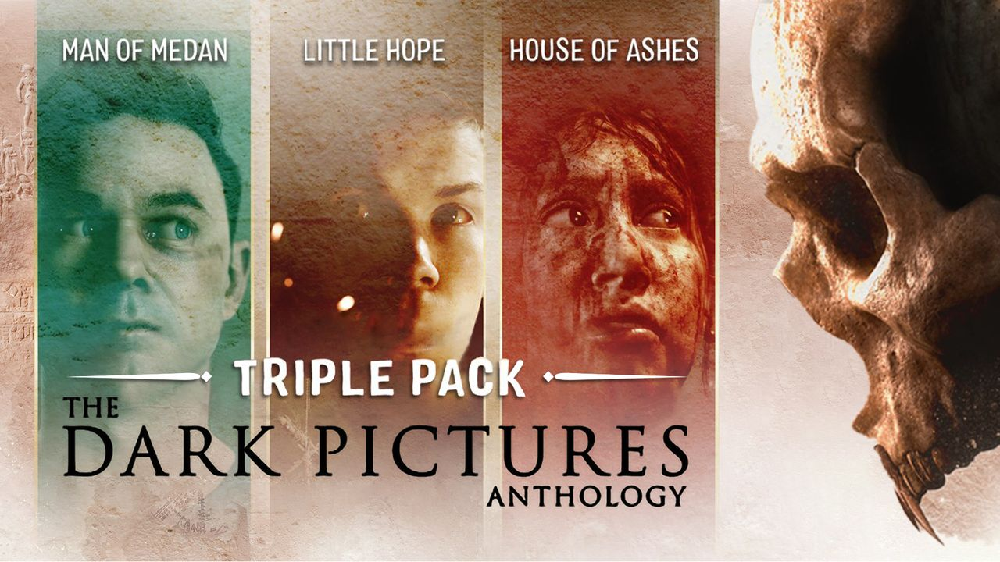

Антология The Dark Pictures.
Антология The Dark Pictures (англ. The Dark Pictures Anthology) — серия повествовательных, автономных, основанных на выборе хоррор игр, разработанных компанией Supermassive Games и опубликованных Bandai Namco Entertainment. Хотя все игры являются автономными, все они находятся в одной и той же вселенной и связаны между собой через Хранителя историй, присутствующего в каждой части.
Полная антология будет состоять из восьми запланированных игр, с планом выпуска семи последующих игр в виде по две игры каждые шесть месяцев каждого года. Каждая часть основана на определённом жанре ужасов и имеет уникальный сюжет, не связанный с предыдущими частями. Каждая игра содержит новых персонажей, обстановку и истории.
С анонсом The Devil in Me выяснилось, что антология будет разделена на два сезона по 4 игры в каждом.